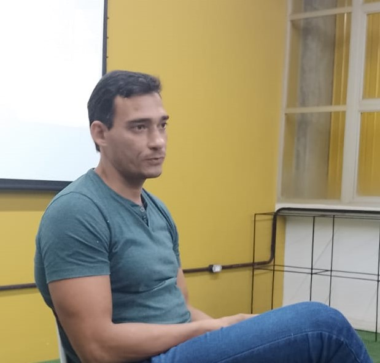
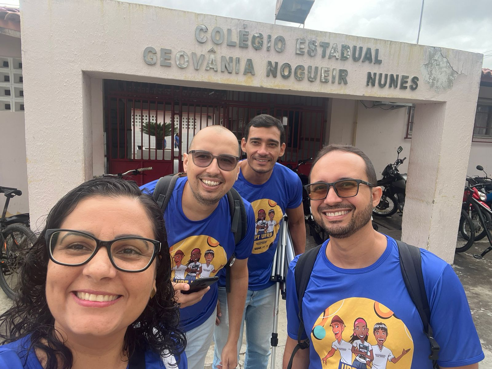
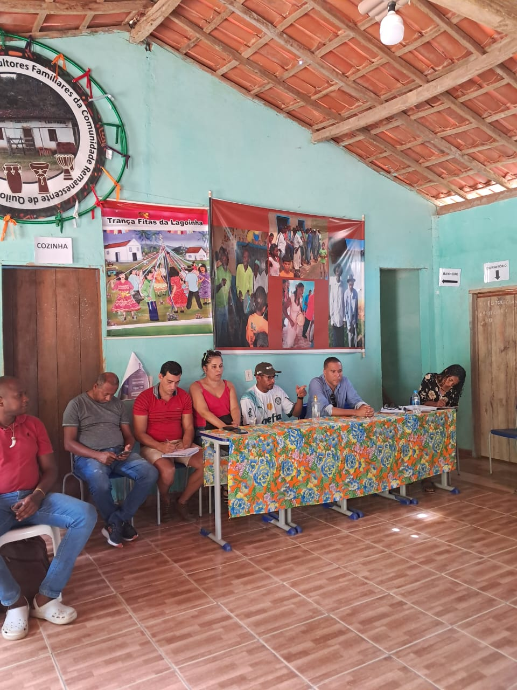
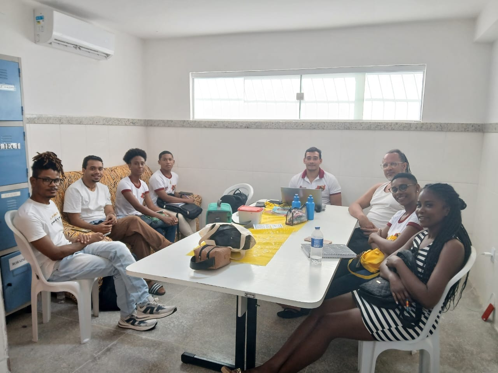
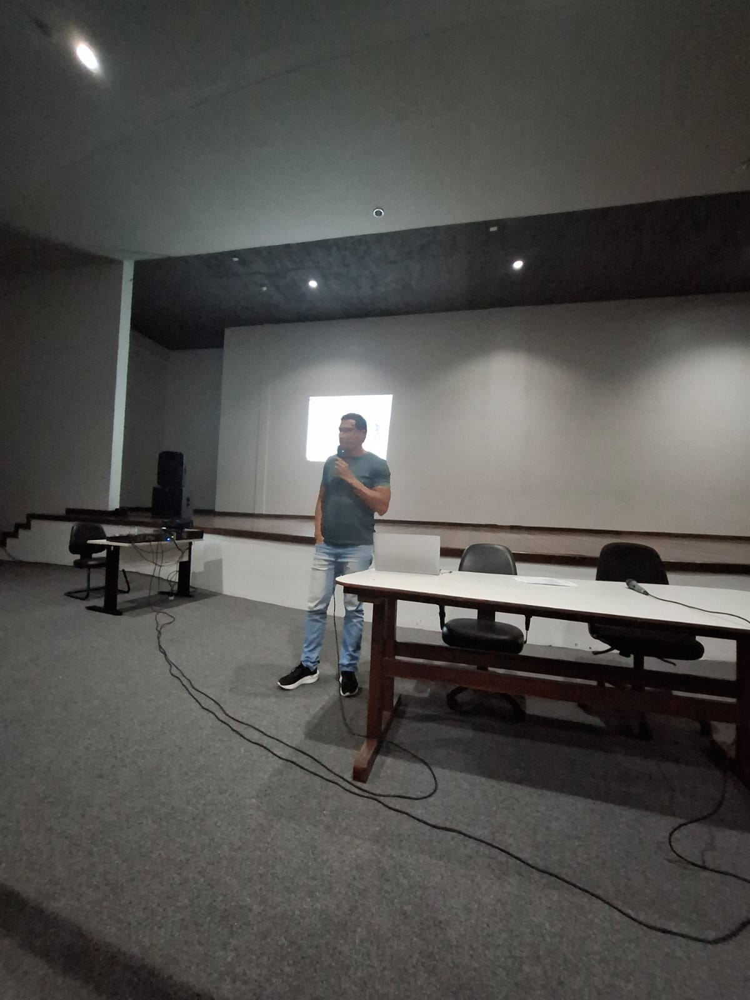
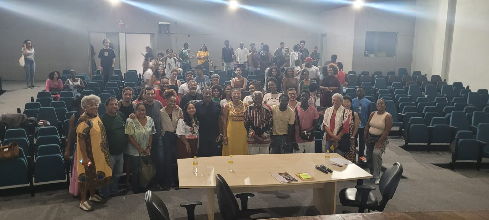

Trajetória no curso
Ensino, pesquisa, extensão e formação histórica
André de Almeida Rego é docente efetivo do Curso de Licenciatura em História da UFRB desde 2023. Atua nas áreas de História indígena, História do Brasil e da Bahia, História de quilombos e Ensino de História. No curso, exerce as funções de professor e membro do Colegiado e do Núcleo Docente Estruturante (NDE).
Ingresso: 2023Docente efetivoHistória indígenaHistória da BahiaQuilombosEnsino de História
Ver produção acadêmica de André →
Seleção do professor
Produções em destaque
Entre as produções indicadas por André para o Memorial, estão um capítulo dedicado ao ensino de História no Programa Universidade para Todos e um relatório de identificação territorial de comunidade quilombola.
Relatório de Identificação do Território da Comunidade Quilombola Lagoinha, município de Nova Canaã/BA
Ensino, pesquisa e extensão
Projetos

Universidade para Todos — UPT
Coordenação da área de História, com supervisão de monitores responsáveis por aulas de caráter pré-vestibular em cidades do Recôncavo da Bahia nos anos de 2023 e 2024.

Comunidades Quilombolas da Bahia: Identidades, Territorialidades e Processos de Regularização Fundiária
Pesquisa histórica voltada à produção de subsídios para a regularização fundiária de comunidades quilombolas da Bahia, desenvolvida em parceria entre a UFRB e o Instituto Nacional de Colonização e Reforma Agrária (INCRA).

Programa Institucional de Bolsas de Iniciação à Docência — PIBID
Atuação na coordenação de núcleo de iniciação à docência do subprojeto de História, coordenando 24 bolsistas de iniciação à docência, estudantes da Licenciatura em História, e três supervisores da educação básica.
Memórias do curso
Depoimento de André
“Sou André de Almeida Rego e cheguei na UFRB, no curso de Licenciatura em História, em 2023. Logo de início, fui muito bem acolhido e passei a atuar em atividades de ensino, pesquisa, extensão e gestão acadêmica. Nesses mais de três anos na instituição, tenho procurado colaborar nas ações que fazem desta universidade referência de inclusão e conhecimento. Especificamente no campo da História, busco contribuir para que a consciência histórica seja veículo de fortalecimento da cidadania e de superação das dificuldades individuais e coletivas.”
Memória visual
Trajetória em imagens

Auditório do CAHL/UFRB, 2025. Mediação realizada em atividade destinada aos bolsistas do subprojeto de História.

Auditório do CAHL/UFRB, 2025.
Depoimento de estudante
Juliane homenageia André de Almeida Rego
Juliane compartilha memórias de sua convivência com o professor André Rego e fala sobre sua importância em sua trajetória no Curso de História da UFRB.
Projetos de ensino, pesquisa e extensão
Iniciativas do catálogo preliminar do Memorial, identificadas nos currículos Lattes.
Carregando projetos...